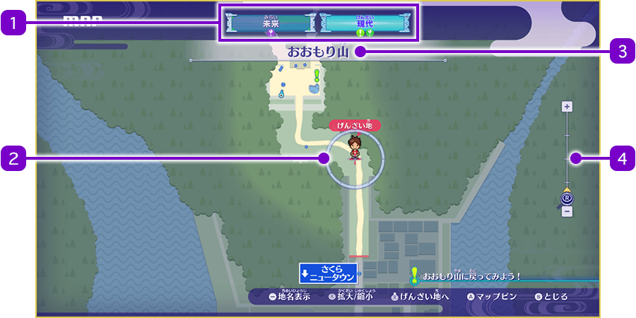
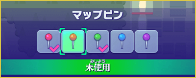

Mapa
Abrir el mapa
Pulsa Ⓨ para abrir el mapa y consultar el mapa de la zona en la que te encuentras.
Además, al pulsar -, puedes alternar entre mostrar y ocultar los nombres de los lugares del mapa.

- 1Mundo actual
-
El mundo en el que te encuentras aparece resaltado. Si hay alguna misión en curso en ese mundo o algún lugar en el que hayas colocado un marcador del mapa, se mostrará un icono debajo del nombre del mundo.
- 2Cursor
-
Puedes moverlo con el stick izquierdo. Además, al pulsar el botón del stick derecho, el cursor volverá a la posición actual del jugador.
- 3Nombre de la zona actual
- 4Nivel de zoom
-
Puedes cambiar el nivel de zoom moviendo el stick derecho hacia arriba o hacia abajo. Cuanto más arriba esté el cursor con forma de lupa, más ampliada estará la vista; cuanto más abajo esté, más alejada estará.
Iconos del minimapa
A continuación se muestran algunos ejemplos de los iconos que aparecen en el mapa (también existen otros iconos).
- Objetivo de la historia
- Objetivo de una misión
- Relocerrojo
 Marcador del mapa (hay 5 colores)
Marcador del mapa (hay 5 colores)- Ignóculo
- Superhíper
- Personajes y animales con los que puedes hablar
- Personal de las tiendas
- Yo-kai
- Yo-kai a los que te puedes enfrentar si los tocas
Colocar un marcador en el mapa
Los marcadores del mapa sirven para señalar lugares a los que quieres ir. Puedes colocar marcadores de 5 colores: rojo, naranja, verde, azul y morado. Coloca el cursor sobre el lugar que quieras marcar y pulsa Ⓐ. Aparecerá el menú de la derecha; selecciona el marcador que quieras colocar y pulsa Ⓐ otra vez para confirmarlo.
※ El marcador que estés utilizando tendrá un ✔. Puedes volver a seleccionarlo y pulsar Ⓐ para quitarlo.

Teletransportarse mediante Telespejo
Mientras estás viendo el mapa, pulsa el botón Ⓧ para mostrar una lista de los Telespejos que hayas encontrado hasta ese momento. Selecciona uno para teletransportarte al lugar donde se encuentra. Si quieres teletransportarte a otro mundo, utiliza los botones L y R para cambiar entre mundos.